"Arizona, where every sunrise paints a canvas of hope for the day ahead"
~ P. Parker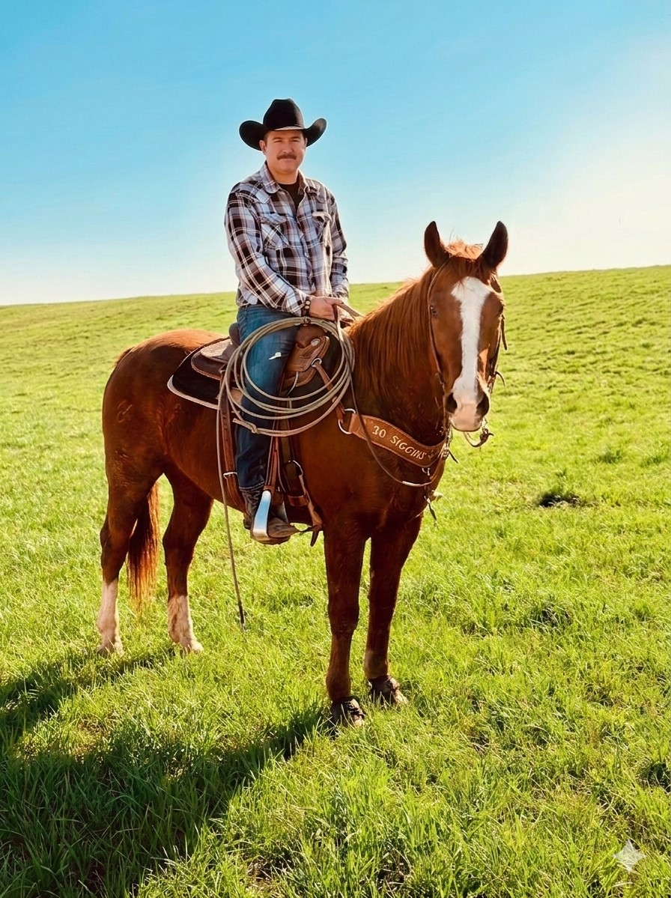
Phoenix, Arizona · Hereford, Texas · Faith · Family
Cowboy. Father. Entrepreneur.
Arizona born and Texas rooted.
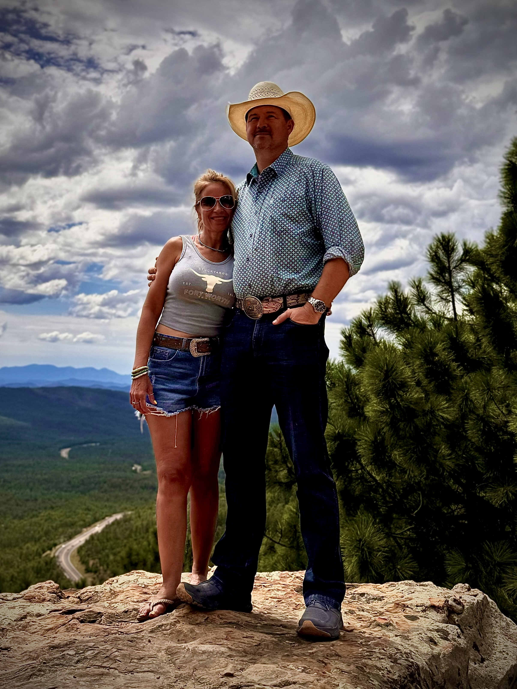
My Story
I grew up in Hereford, Texas — a small town where people say what they mean and mean what they say. My roots are West Texas all the way: dirt roads, wide open skies, and a handshake that means something. That's where my foundation was poured.
I've built my life around three things that never change on me: my faith, my family, and my word. Everything else — the work, the hustle, the early mornings — flows out of those three. I'm not perfect at any of it, but I show up every single day and give it everything I've got.
What I Stand For
Faith is the anchor for me. Every decision I make, every relationship I build, starts with a foundation that isn't built on me — it's built on something much bigger. I kneel because I know exactly where my strength comes from, and it isn't from me alone.
I stand for the families who've been overlooked, the veterans who gave everything, and the communities that deserve someone in their corner. I stand because someone has to — and I'd rather it be me than nobody at all.
I get up for Sara and Scarlett. I get up for Cristina. I get up for my family and the people counting on me. The alarm goes off early and I'm grateful for it — because another day means another chance to do something that matters.
Arizona Roots
I was raised in Queen Creek, Arizona — back before it was a suburb, when it was still red dirt roads and cotton fields and everybody knew everybody. I competed in High School and College Rodeos all across the state. Team Roping and Bulldogging — two events that taught me more about life than any classroom ever did.
Arizona didn't just shape my work ethic — it forged who I am. The desert teaches you patience whether you want to learn it or not. The rodeo arena teaches you that you either commit or you don't — there's no halfway. And growing up in Queen Creek taught me that your word is your bond and your handshake still means something. I still believe that with everything I've got.
"Arizona, where every sunrise paints a canvas of hope for the day ahead"
~ P. ParkerMy Life Outside the Office
In the Arena
That's me and my buddy Joel — Rubio the Palomino under me and Monty the Chestnut under him. Team roping is one of those things I never got out of my blood. It's not just a sport to me. It's a brotherhood. You learn real fast that you can't do it alone — you have to trust your partner completely. I've been competing since my Queen Creek days and I still get after it every chance I get.
My Girls
Sara is 19 and Scarlett is 10 — and I'll tell you straight, every early morning I've ever put in, every mile I've ever driven, every deal I've ever worked has been for these two. They're not the reason I started. They're the reason I never stop. Being their dad is the best thing I've ever done and the title I'm most proud of, full stop.
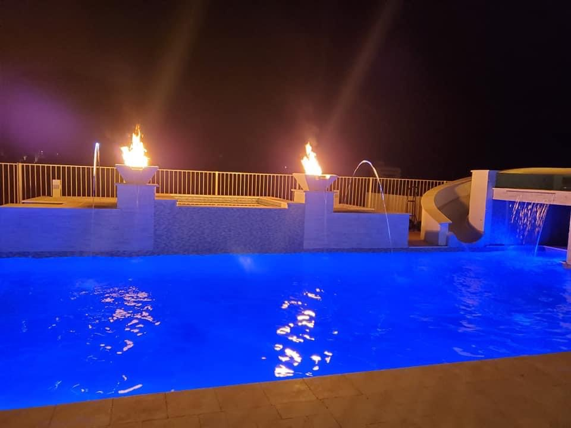
Built With My Own Vision
I designed this myself — fire features, a waterfall, a slide, and blue-lit water at night. When I build something I put my name on it, and that means I don't cut corners. Same goes for everything I do. If I'm going to do it, I'm going to do it right. This pool is exactly what I had in my head — and I'm proud of it every single time I look at it.
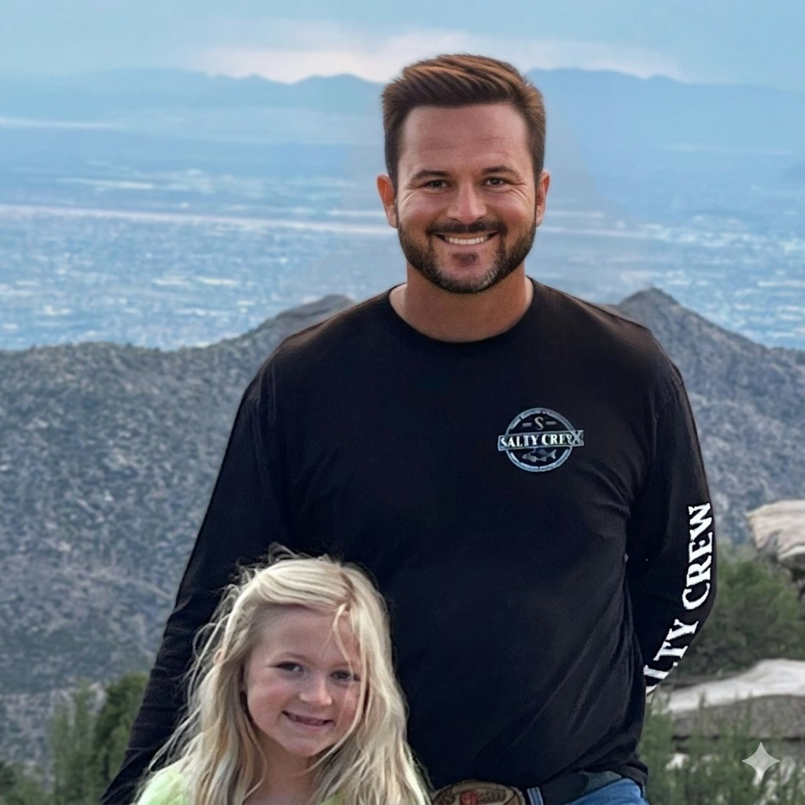
Up in the Pines
There's something about getting up in elevation that clears my head like nothing else. Mount Lemmon, the White Mountains, the Santa Catalinas — I'll take any of them. When I'm up in the pines with my family I'm reminded of what's actually real and what's just noise. I need that. We all need that.
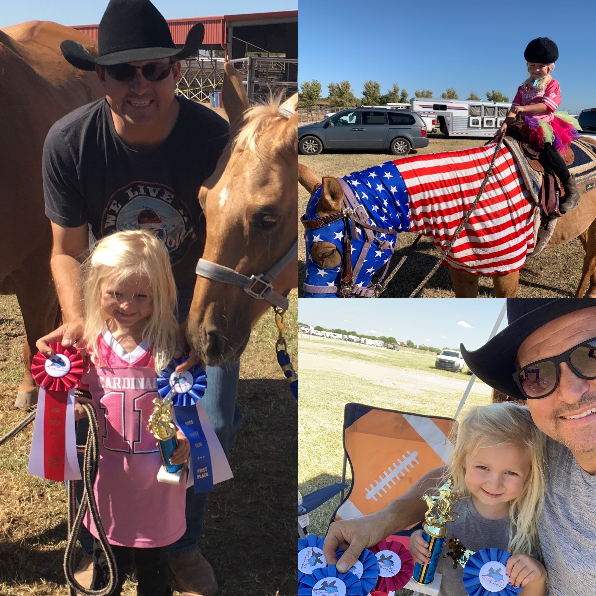
Where It All Started
I competed in Team Roping and Bulldogging all across Arizona from the time I was in high school through college. The rodeo arena doesn't care about excuses — you either do it or you don't. That's where I learned to prepare, to commit, and to trust my gut when the gate swings open. Those lessons never left me.
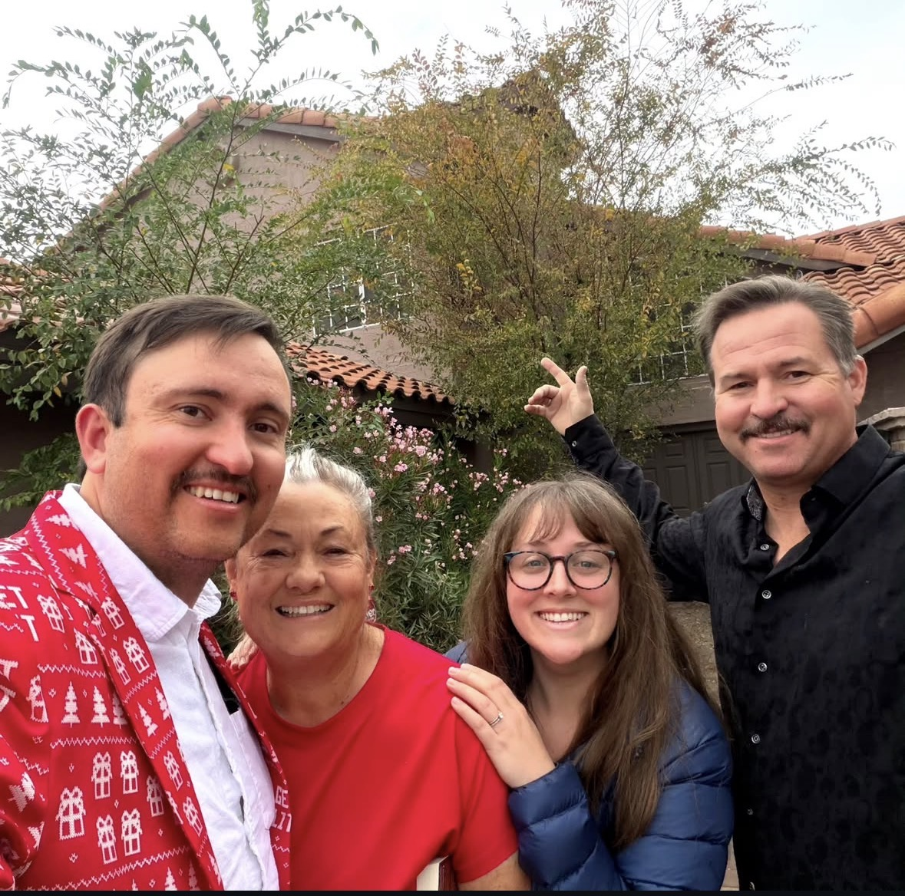
My Foundation
Faith, family, and community aren't things I talk about — they're things I live. The people in my life keep me grounded on the hard days and make the good days worth celebrating. I don't take a single one of them for granted. They're not the backdrop to my story. They are the story.
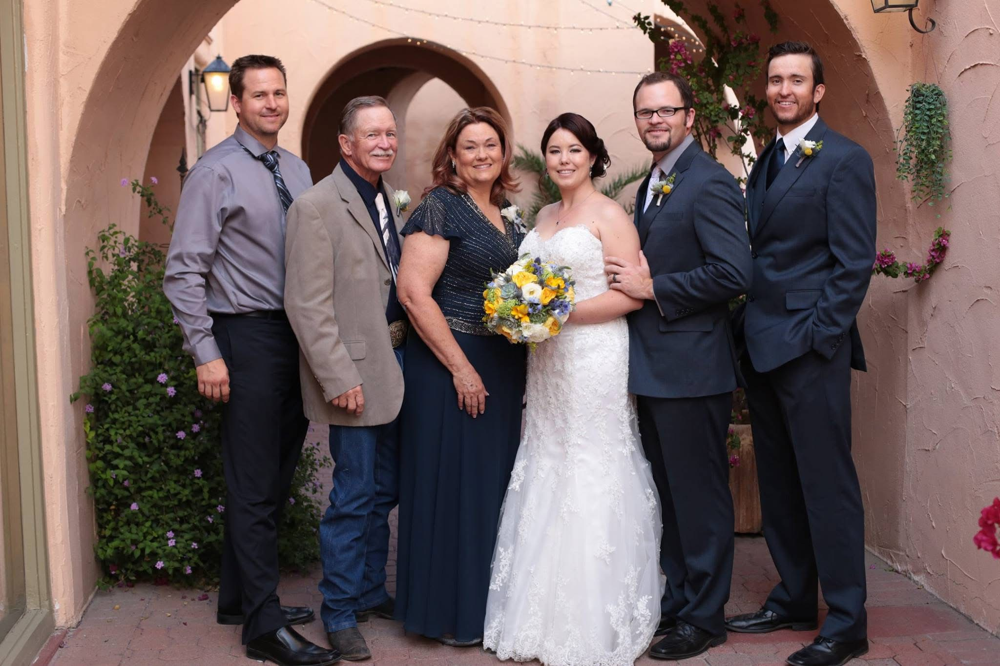
Family Celebration
My family shows up. That's all I can say. In the good times, the hard times, the times in between — the Parkers are there. I don't think you fully appreciate that until you've been through something tough and you look around and every single person you love is standing right next to you. I've got that. And I don't take it lightly.
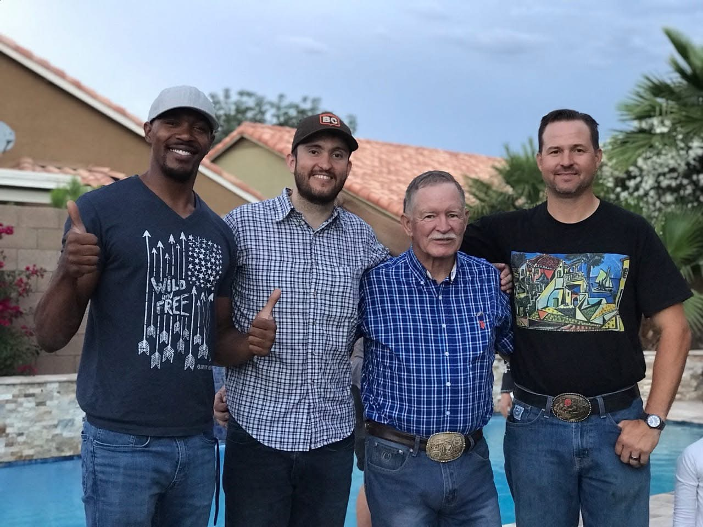
My Brothers & My Dad
From Hereford to Phoenix, the Parker men have always carried the same code — work hard, tell the truth, take care of your family. My dad set that standard before I knew what a standard was. My brothers carry it right alongside me. I wouldn't be who I am without these guys. Simple as that.
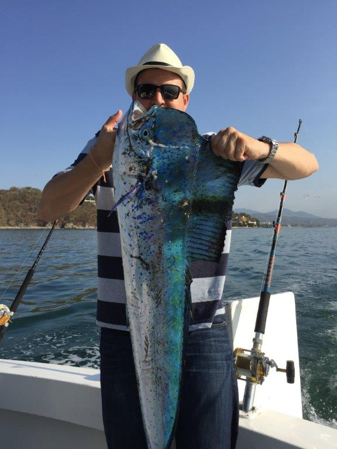
Puerto Vallarta — Deep Sea
I pulled this brilliant blue mahi-mahi out of the Pacific off Puerto Vallarta on a company fishing trip I put together for my top performers. I'll be honest — I was pretty proud of that fish. Work hard, take care of your people, and never miss a chance to get out on the water. That's my philosophy and I'm sticking to it.
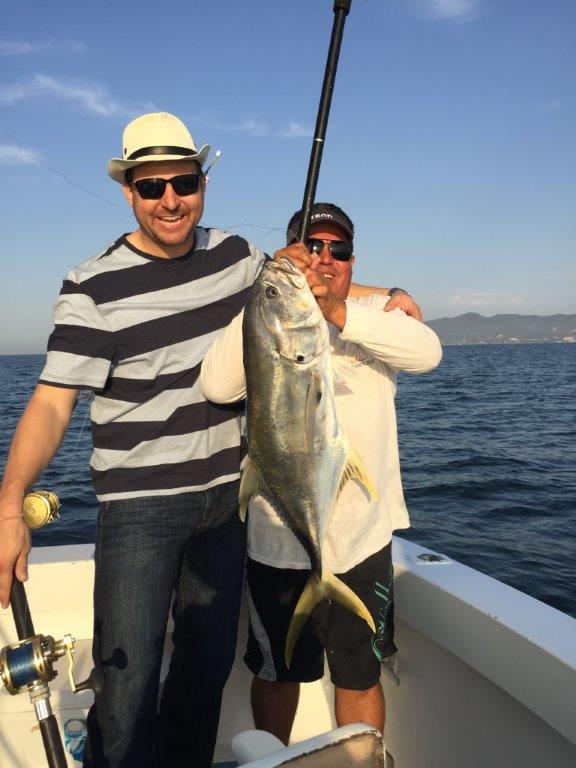
Taking Care of My People
I put this trip together myself for the people who grind alongside me. I believe in taking care of the people in my corner — not just when it's easy, but consistently. If you show up for me, I'm going to show up for you. That's not a management philosophy. That's just how I was raised.
What I Give Back
I was raised to believe that the more you're given, the more you're responsible to give. I take that seriously. A portion of everything I earn goes to organizations that fight for people who can't always fight for themselves. That's not a line item — that's a commitment I made a long time ago and I'm not walking it back.
My Professional Work
I started Rightful Returns Recovery because I saw billions of dollars sitting in government accounts that rightfully belong to families who don't even know it exists. I built a firm to find it, fight for it, and return it — at zero cost to the people who deserve it. No upfront fees. Ever. If I don't recover, I don't get paid. That's the deal and I'm proud of it.
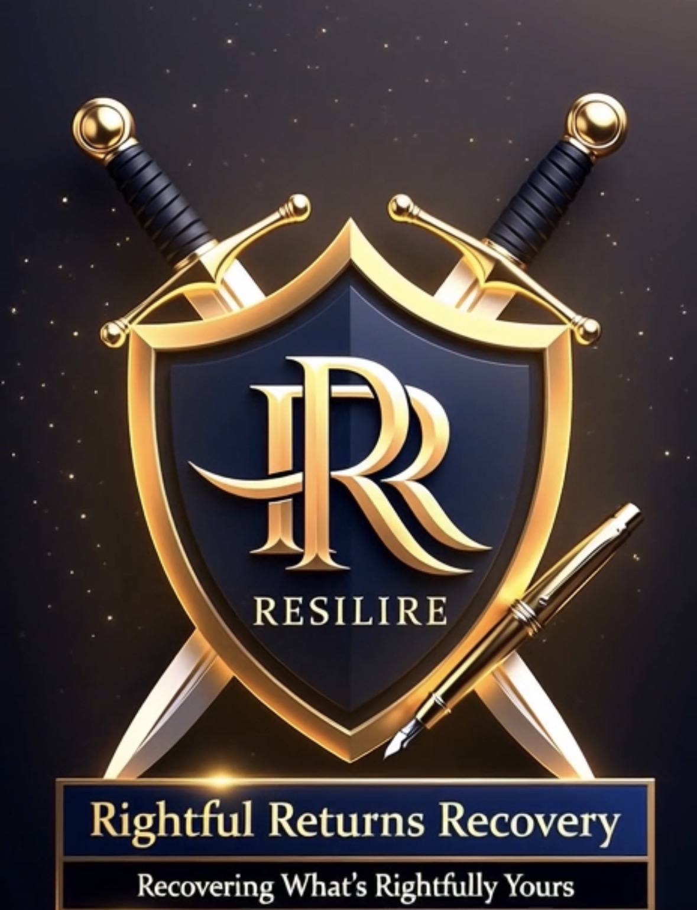
Reach Out
Whether you want to talk business, connect personally, or just say hello — I'm reachable. I'm a real person and I pick up the phone. Don't be a stranger.
The Powell Parker Network
Powell Parker operates across several platforms — from his personal site to his family home base to his professional recovery firm. Each one connected. Each one purposeful.
```